Danish Ceramics
VII - The Turn of the Century
by Tove Jespersen, Klitgaarden
Antique & Ceramics
Herman August Kähler Pottery, Nestved
(on Zealand) 1839-1974

Posterity can thank potter Joachim Christian Herman Kähler
(1808-1884) that he left the duchy Holstein in 1839 and established
a workshop in Nestved. This way, the foundation stone to the biggest
flagship within the Danish ceramics, was laid. In the first 30 years
he produced all-night burners, spring water jars and articles for
the everyday use in the kitchen. In 1872 his sons Herman August
Kähler (1846-1917) and Carl Frederik Kähler (1850-1920)
took over the pottery. Herman August took over the production of
all-night burners. He however followed his intuition and started
his own workshop, and in 1875 he established what we today know
as Kählers Pottery in Nestved. Carl was left alone and decided
to sell his part.
Herman August Kähler introduced the 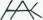 signature,
which since that time has been the mark on all Kählers products.
In 1883 Vilhelm Klein (1835-1913, architect) from "the Copenhagen
Drawing School for Women" was looking for a pottery where he
could have his students' ceramics fired. This resulted in a co-operation
with Herman August Kähler. This co-operation gave Herman August
the inspiration to start production of other items than all-night
burners. He experimented again and again with glazes. The target
was a red luster glaze, like the one used by the Italian maestro
Giorgio from Gubbio in the 16th century. In 1888 he presented a
ruby glaze which made him world famous. This ruby is today known
as "Kähler red".
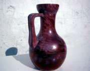
In the meantime artists were eager to be a part of the Kähler
studio in Nestved. Between 1885-1907 Hans Andersen Brendekilde (1857-1942,
painter) decorated some items with motifs from fairytales and legendary
figures - Trolls and witches. From 1886-1888 Carl Ove Julian Lund
known as "deaf Lund" (1857-1936, china painter) tried
fine underglaze painting; but this technique wasn't as good on ceramics
as on china, so this failed. From 1888-1914 Karl Hansen-Reistrup
(1863-1929, painter and visual artist) became artistic leader of
the pottery. He had a close cooperation with Herman August The vases
and pots that he designed and Herman August turned, was decorated
with modeled animal heads, which in their art-nouveau style was
perfect suitable for the new "Kähler red" luster
glaze. This cooperative work was presented at the World Exhibition
in Paris 1889. The public was carried away by the "Kähler
red" and with one stroke Kähler was world famous. Many
international Museums made purchases.
Hansen-Reistrup produced a number of wall friezes - among those
the "Peacock-frieze" in 1897, which was sold to the National
Museum in Stockholm. The "Eagle-frieze" which can be seen
at the Sèvres-Museum. Also the elephants at the Carlsberg
Brewery in Copenhagen are his work. From 1889-1890 Laurits Andersen
Ring (1854-1933, painter) produced only a few things - he preferred
painting. In 1896 he married the daughter of Herman August Sigrid
Kähler (1874-1923). Before her marriage Sigrid worked with
flower decorations at the pottery.
From 1890-1891 Thorvald Bindesboell (1846-1908, architect and sculptor)
was designing vases and pots with sgraffito (scratched patterns)
and slipping in abstract motifs, in the French "Art Nouveau"
style (period 1890-1910) in Germany it was called "Jugendstil"
and in Denmark "Skoenvirke". The Skoenvirke or the Jugendstil
was a bit later and longer in Denmark. It was the same Style but
the period was 1890-1920. Bindesboell is very dominating - a prima
donna - and he doesn't find that there is room enough for both him
and Hansen-Reistrup. Herman August did not agree and the message
to Bindesboell was "If you don't like the heat, get out of
the kitchen". The years are extremely successful. The Kähler
Pottery is winning prizes on exhibitions all over the world. They
are selling to the leading galleries and art museums both in Europe
and USA.
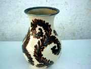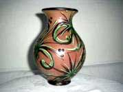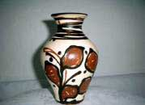
From 1901 the son of Herman August - Herman Hans Christian Kähler
(1876-1940) takes over the leadership. A new era begins. Herman
Hans Christian was tired of the "Kähler Red" and
thought that it was time for a change. He was, like his contemporary
Bertel Ipsen, from P. Ipsens
Enke, fascinated by Bindesboell and his slipped ceramics.
So it was a stroke of luck when Svend Hammershoei arrived to the
pottery and started his production of slipped ceramics. From 1908
Herman Hans Christian takes up the horn painting again. This technique
suits the pots good and ceramics decorated with slipped horn painting
is typical for what we today associate with the "Kähler
Style". The Horn Painting was a difficult technique. The tool
was a hollowed cow horn with a goose quill. The horn was filled
up with the slip, which afterwards was dosed through the goose quill,
used as a pen. Herman Hans Christian and his journeymen mastered
the craft and often up to 10 horns were used at the same time decorating
a vase. The first items were decorated in dark brown, blue and green
with patterns in the Jugendstyle (Skoenvirke). Later on both colors
and patterns became lighter.
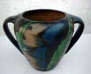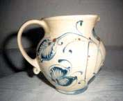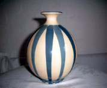
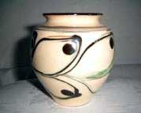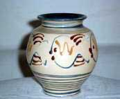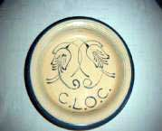
Svend Hammershoei (1873-1948 painter) was the artist who had the
longest cooperation with Kähler from 1893-1948 . In those years
he developed all the time which is also reflected in his ceramics.
Maybe he found inspiration while he was occupied with other activities
as painting and writing (about Bindesboell). He had worked together
with Bindesboell in the 1890s at G. Eifrig, Copenhagen Pottery.
It was a tempestuous cooperation where Hammershoei's great skill
was put to use. Often he turned and did the modeling according to
Bindesboell's drawings and then Bindesboell just signed the works.
In the beginning his vases and pots with slipped relief decoration
in leaf ornamentation, was clearly impressed by Bindesboell. Later
he tried an antique terracotta design, also with leaves ornamentations
or with stamped impressions. Hammershoei then moved in the direction
of geometrical design, with characteristic profiling, often fixed
with small modeled"buds". These items with the gray/black/white
glaze (invented by Jens Thirslund) was an enormous success and today
it is the kind of Kähler- ceramics which people associate with
Hammershoei. Hammershoei never got married and had no children,
but in his studio and on his many journeys his substitute children
- his dolls - followed him.
1913-1941 - Jens Thirslund (1892-1942 painter). In 1914 he married
Herman August's daughter, Stella Kähler (1886-1948, decorator).
He became artistic leader of the factory. Thirslund had an born
talent for painting. A bohemian type, who set up his own area in
the pottery as a real artistic den filled with all sorts of goods
and chattels from floor to roof. It became a rendezvous for the
artists from all over. The artistic inspiration he derived from
the Oriental was often spiced with a sense of humor. He became a
true master in painting with luster glazes.
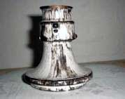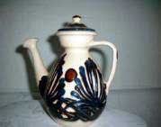
In 1917 Herman August Kähler dies. After the 1st world war
the number of agents worldwide were extended. Kähler ceramics
were represented at most recognized museums, e.g. in the USA at
the Metropolitan Museum of Art. Items were sold through Zacho &
Co in Hollywood, the Frankl Galleries in New York and The Associated
Merchandising Cooperation.
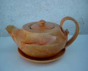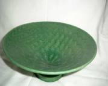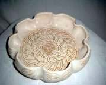
After Herman Hans Christian's death in 1940 the 4th generation
takes over. Nils Joakim Kähler (1906-1979, potter) takes care
of the artistic side and Herman Joergen Kähler (1904-1996,
potter) takes care of administration and glaze production. Nils
Kähler had been working together with Hammershoei and continued
this style, in a modern version with the gray/black/white Thirslund
glaze. Cylindrical design in stoneware with yellow and turquoise
glaze, often with stamped decorations in fishbone pattern. Besides
the mark,
Nils Kähler always signed his items with 'Nils'. Nils Kähler
left his stamp on the factory until 1968, when the two brothers
separate and the factory closes in 1974. An era is finished in Danish
ceramics but the many Kähler journeymen, who started their
own potteries, all over Denmark uphold the grand traditions and
the Kählers have for ever put their stamp on Danish ceramics.
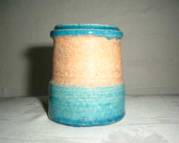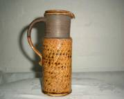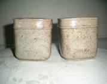
Part 1 > Jens
Michael Andersen
Part 2 > L.Hjorts Terracotta
Factory, Roenne, Bornholm
Part 3 > Soeholm, Roenne on
Bornholm
Part 4 > P. Ipsens Enke, Copenhagen
Part 5 > Kongstrands Pottery,
Esberg
Part 6 > Potteries
and Potters around Horsens
Part 7 > - The Turn of the
Century
Article kindly supplied by Tove Jespersen Klitgaarden
Antique & Ceramics, Denmark. www.Klitgaarden.net
e-mail: Klitgaarden@tdcadsl.dk
More Articles
|